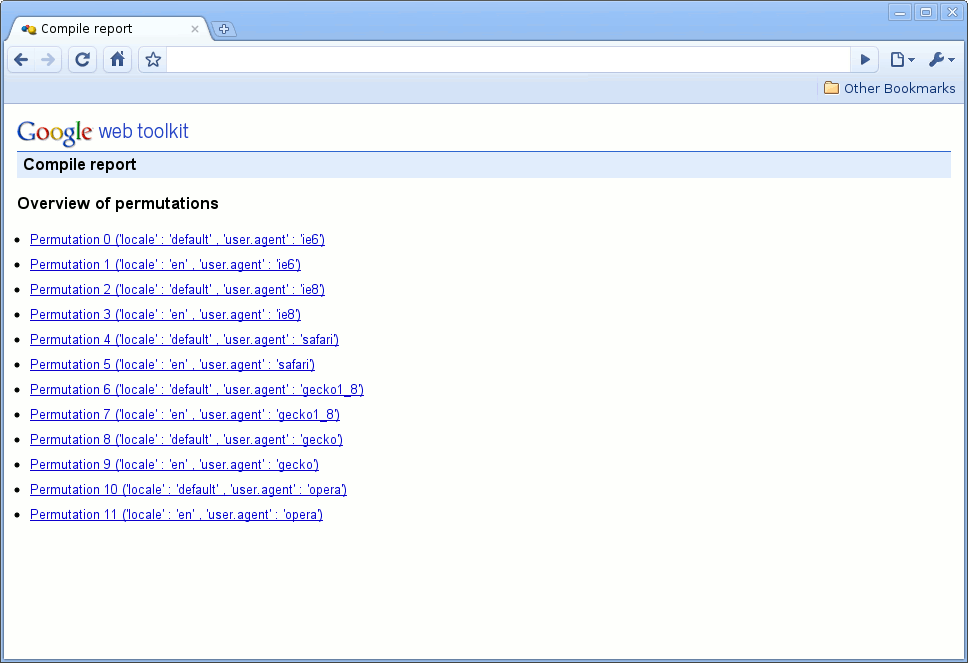
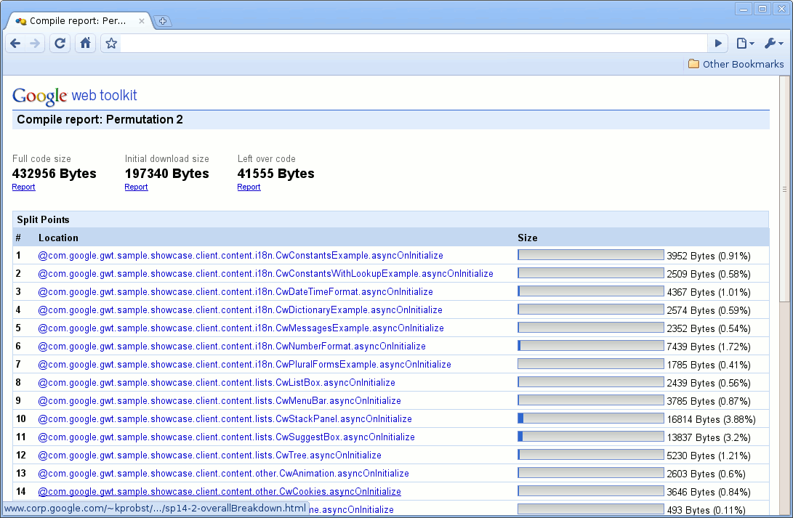
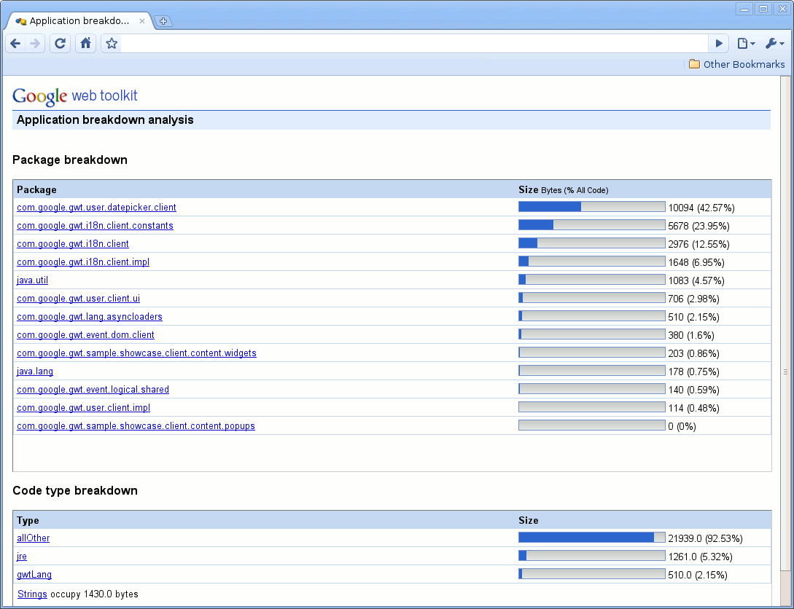
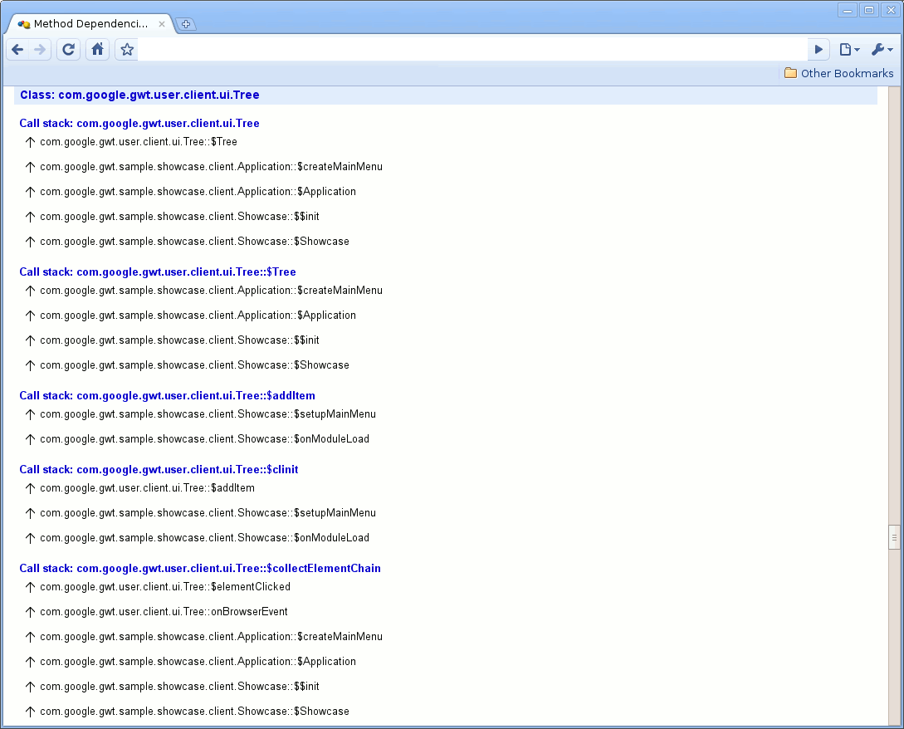
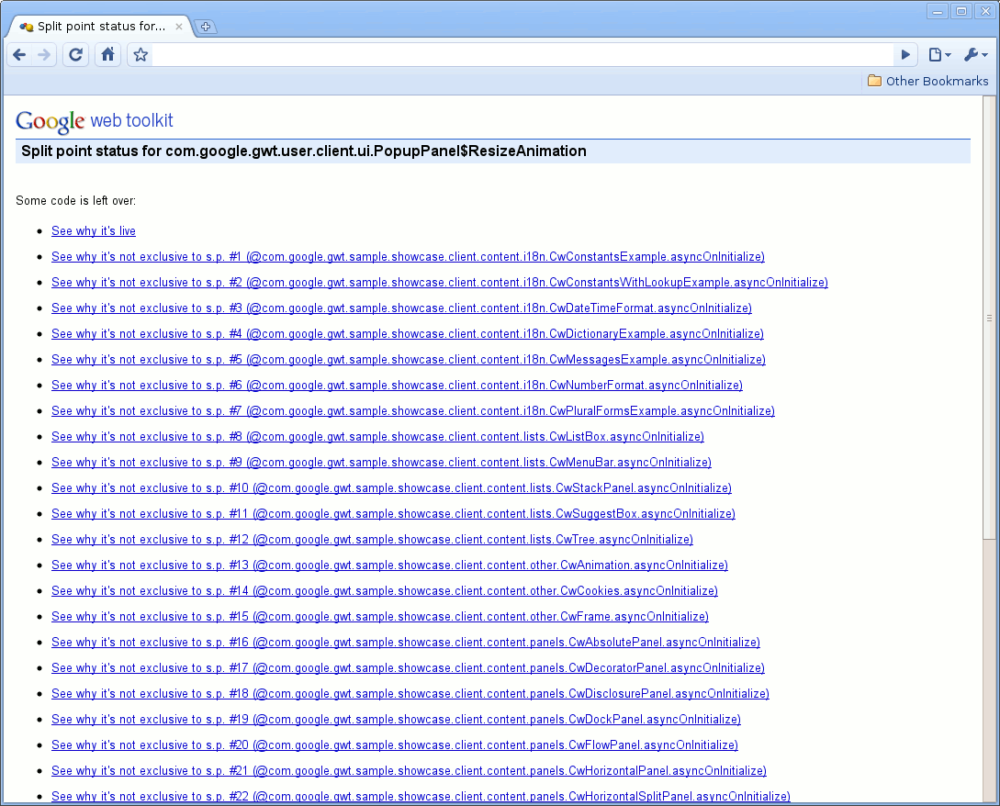
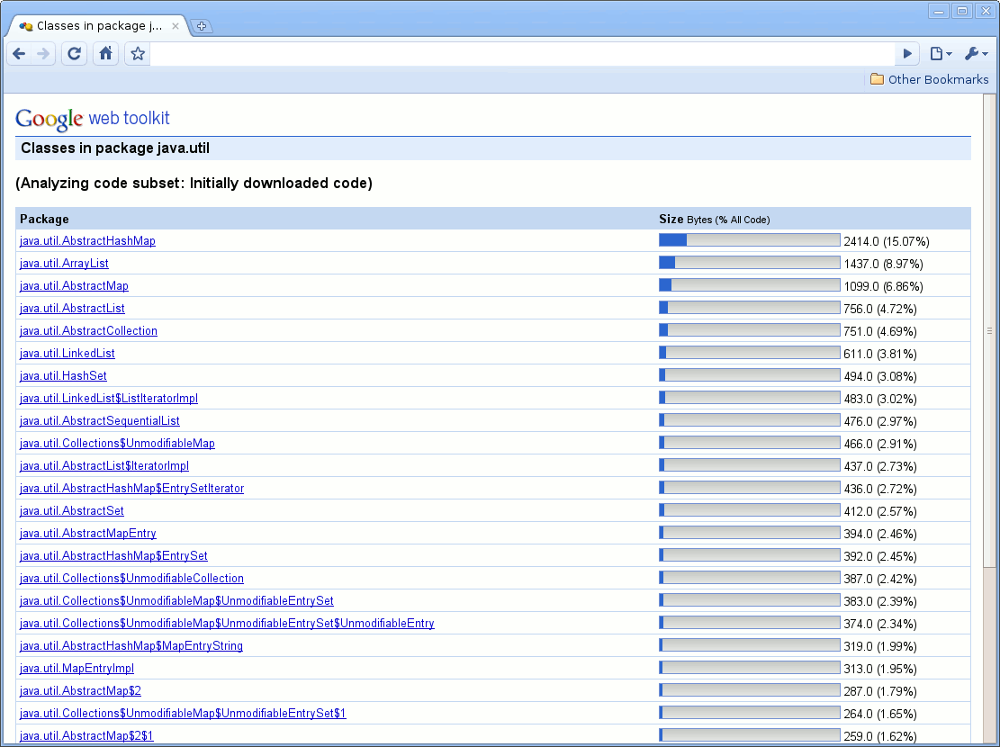

Except as otherwise noted,
the content of this page is licensed under the Creative Commons
Attribution 3.0 License.
Google Code offered in: English - Español - 日本語 - 한국어 - Português - Pусский - 中文(简体) - 中文(繁體)
When programming in GWT, it can sometimes be difficult to understand the compiled output. This is especially true for users of code splitting: why are some fragments bigger, some smaller? Our answer to these questions are Compile Reports. Compile Reports let GWT programmers gain insight into what happens in their application during the compile: how much output their code leads to, what Java packages and classes lead to large JavaScript output, and how the code is split up during code splitting. With this information, you can then modify their application in a targeted way in order to reduce the size of the entire compiled application or the size of certain fragments.
A compile report can be produced during a regular GWT compile. It consists of a set of HTML pages that can easily be browsed and navigated and that provide a graphical representation of the application's compile.
A Compile Report is not produced by default, but it is easy to get the compiler to do so by setting a compiler flag. When the flag is set, the GWT compiler gathers the necessary information during the compile and produces the Compile Report in the form of HTML files. The following compiler flags are available:
Users will generally want to begin browsing a Compile Report from file compileReport/index.html. This file will, by default, sit in directory compileReport unless the -extra compile flag is included.
The first screen a user will see is an overview of all the permutations that a particular Compile Report contains. Figure 1 below shows this overview screen. You can see that it lists the properties for each permutation, such as user agent, locale, etc.

Figure 1: Overview of all permutations
The first thing to look at in a compile report is the overall size breakdown of your application.
Figure 2 shows an overview of one permutation. At the top, you can see the full code size, the initial download size, as well as the leftover code. The initial download size is the amount of code downloaded when the application is loaded. If no code splitting is used, it will be the same as the full code size, otherwise it will normally be much less. For more information on leftover code, please refer to the code splitting documentation. The links found just below the sizes lead to more detailed information on each of these sizes.
Below this information, the Compile Report lists the sizes of the individual code fragments that were produced by Code Splitting.

Figure 2: Overview of one permutation
After analyzing the sizes of the entire application as well as specific code fragments, users can dive into the details of these sizes. Figure 3 shows a breakdown provided by Compile Reports. The applications is first broken down by packages. All packages in your application are listed in this section, along with the amount of JavaScript code they produce. The Compile Report also provides a breakdown by code type:
Finally, the report also lists the space taken up by strings.

Figure 3: Package breakdown
This overview breakdown can be particularly useful, for example, to learn how much of the code size is caused by JRE code. For example, if you see that your use of java.util.HashSet causes your application to grow too big, you may find a way to do without java.util.HashSet in your code.
At some point you will try to get something moved out of the initial download fragment, but the GWT compiler will put it there anyway. Sometimes you can quickly figure out why, but other times it will not be obvious at all. The way to find out is to look through the dependencies that are reported in the Compile Report. The most common example is that you expected something (say, a class) to be left out of the initial download, but it was not. To find out why, browse to that class via the "initial download" code subset (from the Overview, click on the relevant permutation, then click on the "Report" link below "Initial download size". Then click on the class's package). Once you click on the class, you can look at a chain of dependencies leading back to the application's main entry point. This is the chain of dependencies that causes GWT to think the item must be in the initial download. Try to rearrange the code to break one of the links in that chain.
A less common example is that you expected an item to be exclusive to some split point, but actually it's only included in leftover fragments. In this case, browse to the item via the "total program" code subset. You will then get a page describing where the code of that item ended up. If the item is not exclusive to any split point, then you will be shown a list of all split points. If you click on any of them, you will be shown a dependency chain for the item that does not include the split point you selected. To get the item exclusive to some split point, choose a split point, click on it, and then break a link in the dependency chain that comes up.
Figure 4 shows an example of a call stack for one class. It shows how its methods can be traced back to an entry method, in this case onModuleLoad (the standard entry method for GWT modules).

Figure 4: Method dependencies
As mentioned above, Compile Reports are often used in combination with code splitting. One of the questions Compile Reports help answer is where (that is, in which fragment(s)) the compiled code for specific classes gets included. When drilling down to specific classes of the total program, it is often useful to analyze where the compiled code for this class ends up. Will it be in the initial fragment, in specific split point fragments, or in the leftovers fragment? Will it be split up between different fragments? The Split Point Status page aims at answering these questions. Figure 5 below gives an example of such a page. It states that some of the code for the class at hand ends up in the leftovers fragment, and explains why, and why it is not in a different fragment. For example, clicking on the link "See why it's not exclusive to s.p. #7" will lead to a call stack that explains why the code is not exclusive to split point 7, but is needed for a different split point as well. This, in turn explains why the code is in the leftovers fragment. For more details on exclusive and leftovers fragments, please refer to the documentation for code splitting.

Figure 5: Split point status
Compile Reports have four major use cases:
In the first three use cases, Compile Reports can be used to find out what code goes into what fragments, and what packages or classes get the most 'blame' for download size, that is, what packages or classes contribute most to the compiled code. How should programmers use Compile Reports to reduce their application's size? There are two basic approaches:
Let's take the example of an initially downloaded code fragment, in other words, the code that is necessary to start the application. When no code splitting is used, the initial download size will be the entire program, but when code splitting is used, it can be much less. In such a case, the programmer will want to know exactly what parts of the program are downloaded initially. As an example, Figure 6 shows all classes that in the java.lang package that contribute code to the initial download in our sample application. A programmer may see this and decide to cut out the use of java.util.AbstractHashMap, which in turn will cut down the initial download for this application. This strategy can be followed multiple times: target those classes that contribute the most to the initial download and cut them out. For example, programmers may choose to use fewer widgets, fewer java language packages/classes, etc.

Figure 6: Example of java.util use in initial download
Especially in the context of initial download size, consider some functionality (say, a 'Settings' tab) that is not strictly necessary for program startup. In order to cut this code from the initial fragment, the programmer may choose to set a split point around this functionality, so that its code is only downloaded when needed and thus cut from the initial fragment. The Compile Report may make it clear that this functionality adds sizeable amounts of code to the initial fragment, so that it would be worth eliminating from the initial download.